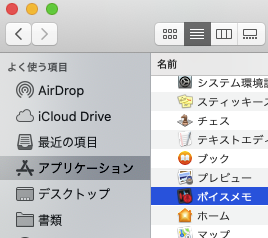

パレーゴトーク
接続チェックリスト
- トークの予約前に接続チェックが必要です。「はい」の場合、チェックを入れて次のページに進んでください。 すべてチェックが入ったら、トーク予約ページに進めます。
- チェックの入らない項目がある場合は、トークの予約ができません。 項目の改善をしていただき、再度接続チェックを行ってください。
- 予約の前に毎回接続チェックをお受けください。本番での接続トラブルを減らすためです。ご理解とご協力をお願いいたします。
1. デスクトップPC、またはノートPCをお持ちですか？ (Windows/MacどちらでもOK)
＊ 現在パレーゴトークは、スマートフォンやタブレットには対応しておりません。
2. PCにChromeはインストールされていますか？
＊最新版を推奨
＊必ずChromeをお使いください。現在パレーゴトークはChromeブラウザーにのみ対応しています。
Chromeダウンロードはこちら こちら
3. PCにカメラ、マイク内蔵されていますか？
（外付けウェブカムもOK）
4. PCに接続できるイヤホンかヘッドセットはお持ちですか？
＊マイクが付いてないタイプ推奨
＊自分のパソコン上で再生した音声ファイルが漏れて相手側に聞こえないように、マイクが付いていないイヤホンかヘッドセットをおすすめします。もしマイクが付いている場合はPCもしくはトークの設定でPC内臓のマイクを選択してください。 トークでの設定はこちら≫.
5. 接続テスト：カメラ
テスト用カメラにご自分が映りましたか？
【テスト用おすすめツール】
Windowsのカメラ
MacのFaceTime


6. 接続テスト：スピーカ＆マイク
ご自分の声を 録音 → 再生 して聞き取れましたか？
【テスト用おすすめツール】
Windowsのボイスレコーダ
Macのボイスメモ


PC・付属機器のチェックは終了です！
続いてトークの予約を行うことができます。
＊ ＊ ＊ ご予約のルール ＊ ＊ ＊
- 予約の締切はトーク希望日の１週間前までに送信ください。
- 下のカレンダーから予約手順を2回繰り返し、ご希望日を２日分ご予約ください。調整の上どちらかの日で確定します。
- カレンダーのフォームで、自分の学習言語 (英語他)で話したいトピックスを選択ください。
- 初めてのTalk予約時には、パレーゴログイン後、メニューバーHelp内のオンラインマニュアルとともに目を通してください
続いてトークで使用する大切な機能についての説明ビデオをご覧ください。
これでパレーゴトークを受ける準備が整いました！
お疲れさまでした！